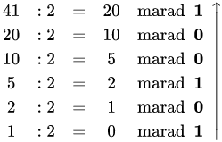

Kettes Számrendszer
A kettes számrendszer vagy bináris számrendszer olyan helyiérték-jelölő számrendszer, ami két számjeggyel ábrázolja a számokat, az arab számírásban a 0-s és az 1-es jegyekkel. Mivel digitális áramkörökben a számrendszerek közül a kettest a legegyszerűbb megvalósítani, a modern számítógépekben és gyakorlatilag bármely olyan elektronikus eszközben, amely valamilyen számításokat végez, szinte kivétel nélkül ezt használják.
A kettes számrendszer pontos leírását először Gottfried Wilhelm Leibniz adta meg az 1703-ban megjelent Explication de l'Arithmétique Binaire című könyvében.
1854-ben George Boole megjelentetett egy cikket a később Boole-algebra néven ismertté váló logikai rendszerről. A cikk mérföldkő volt a logika történetében, és létfontosságú a bináris aritmetika áramkörökkel való megvalósításában
1937-ben Claude Shannon megírta A Symbolic Analysis of Relay and Switching Circuits című, a Boole-algebra és a bináris aritmetika kapcsolókkal és relékkel való megvalósítását leíró diplomamunkáját a Massachusetts Institute of Technology-n, és ezzel megalapozta a digitális áramkörök elméletét
1946-ban a Neumann János által megalkotott Neumann-elvek között szerepel a kettes számrendszer mint a számítások számrendszere.
A tízes számrendszerhez hasonlóan a kettes számrendszerben is elvégezhetők a szokásos alapműveletek. Az ehhez szükséges algoritmusok egyszerűbbek, és hatékonyan valósíthatók meg logikai áramkörökkel. A kettes számrendszer bevezetése több előnnyel is járt a számítástechnikában.
A kettes számrendszerbeli összeadás a számítógépek világának legalapvetőbb művelete. Az A és a B pozitív számok úgy adhatók össze, mint a tízes számrendszerben, csak arra kell ügyelni, hogy az összegben nem jelenik meg a kettes (vagy a hármas). Ehelyett átvitel keletkezik, a tízes számrendszerbeli tízes túllépéséhez hasonlóan.
A kivonás az összeadáshoz hasonlóan viselkedik.
A számítógépek a kivonást a kettes komplemens segítségével végzik. A kisebbítendőhöz hozzá kell adni a kivonandó kettes komplementerét. Ez két lépést jelent. Át kell váltani a kivonandót kettes számrendszerbe, majd a bitjeit át kell billenteni, majd 1-et hozzá kell adni. Az így kapott számot és a kisebbítendő bináris számát össze kell adni. például vonjuk ki a 8-ból az 5-öt.
A kettes számrendszerben hasonlóan lehet szorozni, mint tízes számrendszerben. Lényegesen egyszerűsíti a dolgokat, hogy csak 1 és 0 fordul elő számjegyekként. Arra kell ügyelni, hogy amikor a részszorzatokat összeadjuk, akkor kettes számrendszerben adunk össze.
Áramköri szinten a szorzást is összeadó áramkörök valósítják meg, kihasználva, hogy a szorzás művelete lebontható sorozatos összeadásokra. Például a decimális 3x4=12 (4+4+4) kifejezést binárisra átírva kapjuk: 0011 x 0100 = 0100 + 0100 + 0100 = 1100
A tízes számrendszerhez hasonlóan lehet osztani. Ha az osztó nem kettőhatvány, akkor a hányados periodikus kettedestört lesz. A pontos érték ismeretéhez egy előszakasz + periódusig kell osztani.
A számítógépek csak egy bizonyos pontosságig végzik el ezt a műveletet.
Hasonlóan lehet maradékosan is osztani.
Az osztás műveletet először kivonások - majd összeadások - sorozatára bontjuk, a kivonásokat addig folytatjuk míg a kisebbítendő egyenlő vagy kisebb nem lesz a kivonandónál.
A kettes számrendszer helyiértékes számrendszer: jobbról balra haladva minden egyes számjegy a 2 eggyel nagyobb hatványát fejezi ki . A kettes számrendszerben ábrázolt szám értékét úgy kapjuk meg, hogy összeadjuk azokat a kettő-hatványokat, amelyek helyiértékénél 1 áll.
Egy N szám kettes számrendszerben ábrázolt értékét a következő algoritmussal kaphatjuk meg:
Egy másik módszer, a sorozatos osztás módszere:
Ahelyett, hogy egyből a lehető legnagyobb hatványt vonnánk ki, az új alappal osztunk sorozatosan, így a kisebb egységektől haladunk a nagyobbak felé. A maradékok az egyre nagyobb egységek számát jelzik. Előnye, hogy nem kell előre megbecsülni, hogy mekkora a lehető legnagyobb hatvány, ami még nem kisebb az adott számnál.
Az eredeti számot maradékosan osztjuk kettővel, így megkapjuk, hány kettes lenne benne. A maradék az egyesek számát adja. Megnézzük, hogy van-e elég kettes ahhoz, hogy egy nagyobb egységet képezzen. Ha van, akkor egy maradékos osztással megkapjuk, hány kettest nem lehet egy nagyobb egységre beváltani. Ismételjük az osztásokat, amíg nem kapunk nullát vagy egyet. Ez lesz a kettes számrendszerbe átírt szám első jegye, bitje. A többi jegyét fordított sorrendben adják a maradékok.
Példa:
A kettes számrendszernek nagy jelentősége van a gyors hatványozásban. Egy nk hatvány (k kettes számrendszerbeli alakjának ismeretében) kiszámítható legfeljebb 2*log k szorzással a következő módon:
| vissza az első oldalra | utolsó oldal | következő oldal |